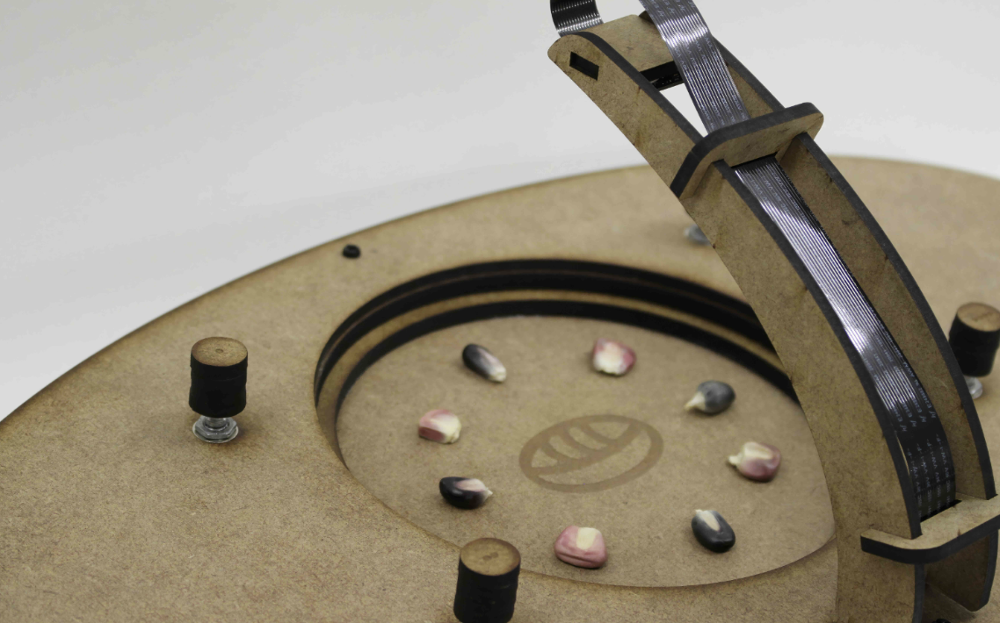
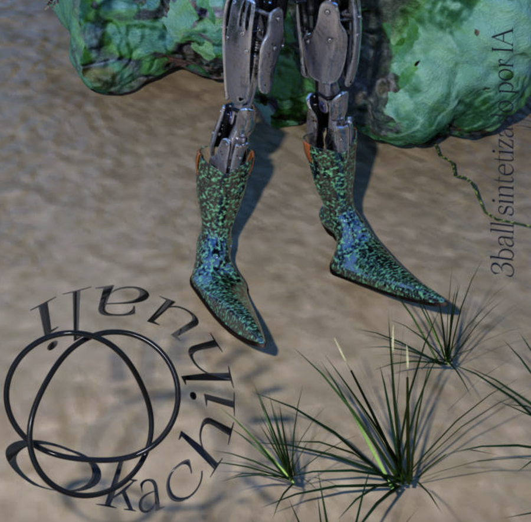
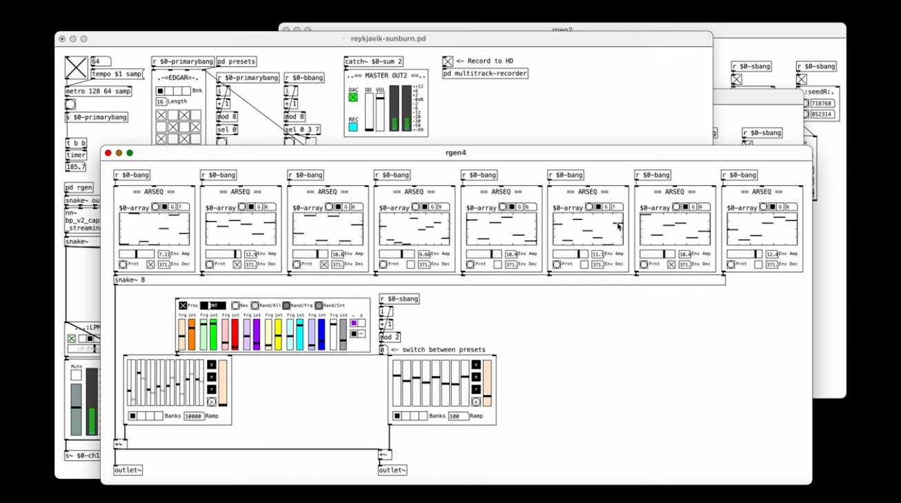

Project 3: Audio Models

https://www.semilla.ai/?work=semilla-ai
You will train a RAVE (Realtime Audio Variational autoEncoder) model on audio samples you collect. RAVE learns the characteristics of sounds and can generate new variations, transform audio in real-time, and create entirely new sonic textures based on your training data.
Before collecting audio, questions to consider:
-
Before collecting audio, questions to consider:
-
What sounds are meaningful to you or your practice?
-
How could a generative sound model serve your creative work?
-
What makes your sound collection unique or underrepresented?
---------------------------------------------------------
Your handmade dataset:
-
~2-3 hours worth of audio samples (.wav preferred)
-
Your own recordings. It could be:
-
field recordings,
-
instruments,
-
voice,
-
found sounds,
-
beats, loops, textures
-
Culturally specific sounds (i.e. traditional instruments, regional sounds, fauna sounds)
-
Archival audio (with proper permissions) - family recordings, community sounds.
-
Genre specific sounds
How to Prepare Audio Files
Recording your own sounds:
-
On Mac:
-
Use QuickTime Player (built-in)
-
Or use Audacity (free, download from audacityteam.org)
-
Or use GarageBand (built-in)
-
-
On Windows:
-
Use Audacity (free, audacityteam.org)
-
Or Voice Recorder (built-in)
-
-
On Linux:
-
Use Audacity
-
Or command line: arecord -f cd -d 60 output.wav (60 seconds)
-
-
On your phone:
-
Record with voice memo app
-
Transfer files to computer
- Convert to .wav if needed
-
Converting audio to the right format:
If your audio is in the wrong format, use Audacity (free):
-
Open Audacity
-
File → Open → Select your audio file
-
If stereo and you want mono: Tracks → Mix → Mix Stereo Down to Mono
-
Check sample rate (bottom left): Should be 44100 Hz
-
If not: Tracks → Resample → Choose 44100 Hz
-
File → Export → Export as WAV
-
Settings: 16-bit PCM
-
Save to your my_audio_dataset folder
What Makes a Good Audio Dataset
Just like every other dataset we've worked with it's about striking a balance between cohesive and varied:
-
All samples should share a sonic characteristic or aesthetic
-
But have variety within that (different pitches, rhythms, timbres)
-
Example: All recordings from the same instrument, but different playing techniques
-
Example: All from one location, but different times of day
---------------------------------------------------------
Trained Model (due in two weeks skip for now)
Be ready to:
-
Show Checkpoint files from your training
-
Show 5-10 audio files generated by your model
-
Talk through:
-
What audio data did you record and why?
-
What worked? What surprised you?
-
Who could use this tool?
---------------------------------------------------------
Inspo:

https://www.semilla.ai/?work=semilla-ai

Martin
Heinze
Reykjavik
Sunburn
---------------------------------------------------------
Due week 8
- Submit in discord a google drive link to your audio samples. They should be split into multiple tracks using the google colab code.
Due week 9
- Submit in discord a google drive link to your audio model checkpoints. If you are able, you can also submit generated output audio samples.
Back to projects